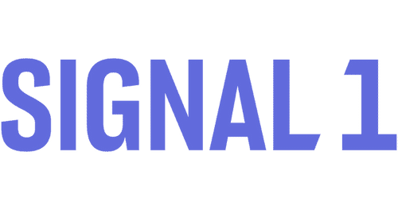

Signal1
Machine Learning Intern
As a Machine Learning Intern at Signal1, I work on a platform for governing and monitoring AI models deployed in healthcare settings. I build and test Python tooling that supports model evaluation and performance monitoring, and contribute to the validation of AI models to strengthen reliability and responsible-AI standards.